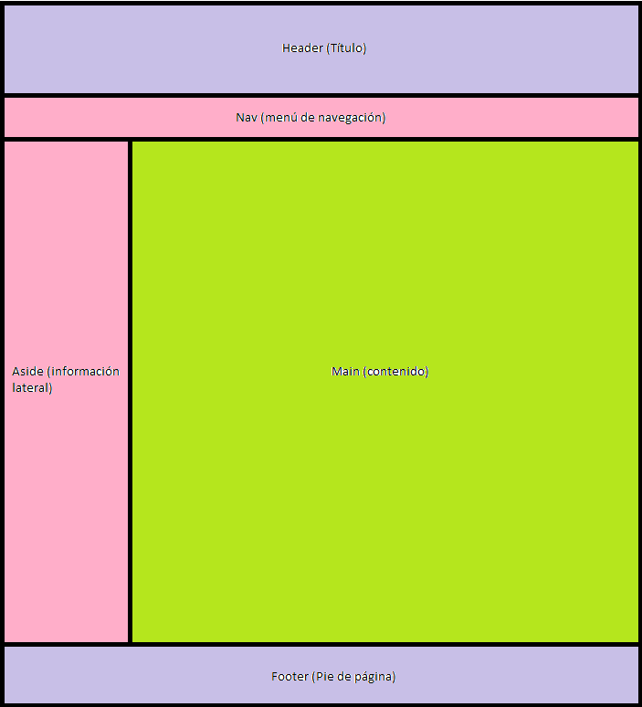

El Proyecto
Inicio
Curriculum
Formulario
Sobre el proyecto
Layout

El layout tiene un header con el título, un nav debajo como menú, un aside a la izquierda con información personal, un main en el centro donde debe estar el contenido principal, y un footer al final con datos del autor.
Documentación
Enlace a la Documentación del proyecto
Video sobre el proyecto